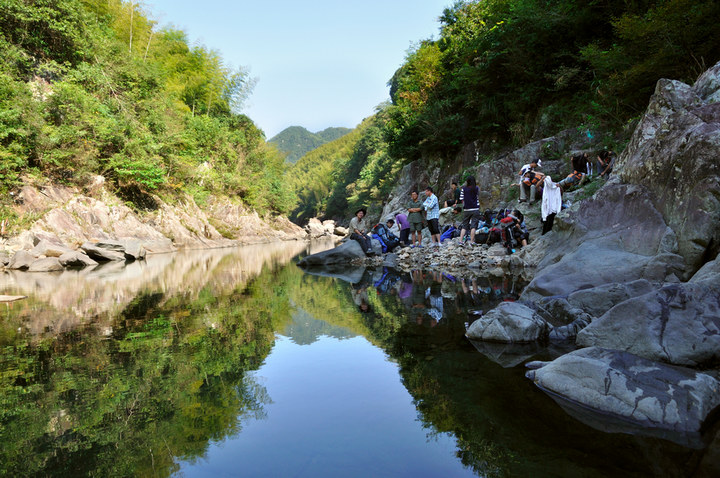
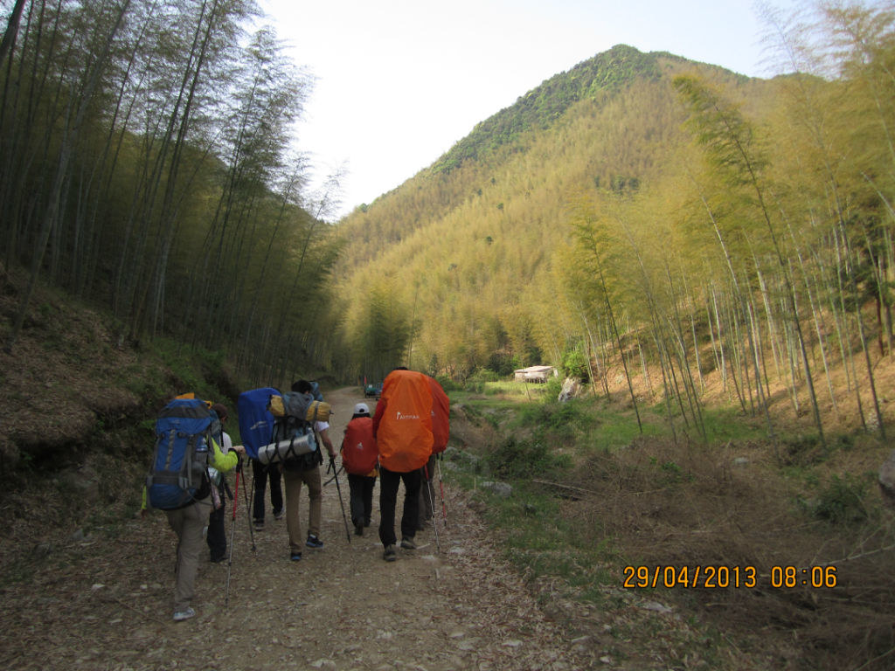
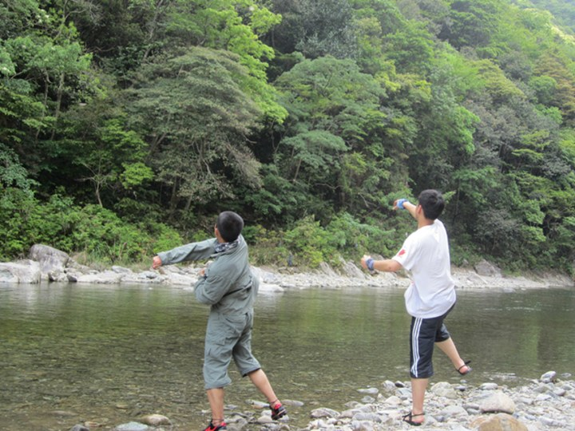
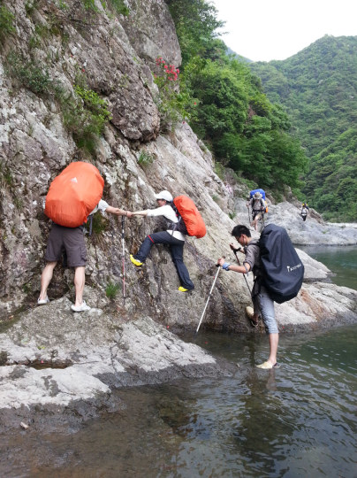
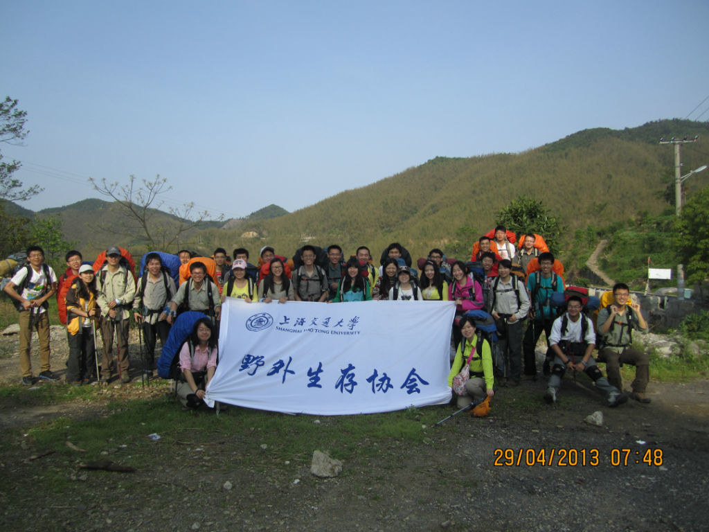

发信人: Julylovingu (小七), 信区: outdoor
标 题: 五一【浙东】召集令
发信站: 饮水思源 (2014年04月25日00:01:24 星期五)
http://tongqu.me/index.php/activity?id=3105
浙东大峡谷的线路包括清水溪和浑水溪，我们走的是其中的清水溪。
 screen.width - 200){this.width = screen.width - 200}">
清水溪，又名逐步溪，一般驴友意识中的“浙东大峡谷”就是指的清水溪这段，长度适中
，水深及膝，是一条经典的徒步溯溪线路。峡谷未做开发，谷底开阔，落差很小，小水潭
无数，清可见底。
 screen.width - 200){this.width = screen.width - 200}">
 screen.width - 200){this.width = screen.width - 200}">
 screen.width - 200){this.width = screen.width - 200}">
总体来说，线路的体能消耗并不大，难点在于第一天下午溯溪过程中几个攀爬岩壁的点。
在天气晴好的情况下，难度更低，风景也极佳。若遇下雨水涨，则攀爬难度增加很多。
 screen.width - 200){this.width = screen.width - 200}">
【线路难度】
强度：★★★谷底地势开阔平坦，行程不长，起伏不大
难度：★★★★岩壁湿滑，一路攀爬，难免湿身；若遇水涨，难度更大
风景：★★★★★缘溪而行，水清见底，小水潭无数，极赞~
总体来说，线路的体能消耗并不大，难点在于第一天下午溯溪过程中几个攀爬岩壁的点。
在天气晴好的情况下，难度更低，风景也极佳。若遇下雨水涨，则攀爬难度增加很多。
*这次活动由于经常涉水，请生理期的女生谨慎选择。
【成员组成】
成员总人数：33人（包括领队等）
领队：王森
副领队：周韵
押队：王根俊
【费用及装备】
个人装备：背包（包罩）、防潮垫、登山杖、睡袋、头灯及备用电池、军刀、雨衣、手套
、衣物（备用一套以供换洗的，外套）、防晒物品、防水保护用具、餐具、洞洞鞋或军胶
(严禁人字拖)、现金少许、身份证、学生证、交通卡、爪机及备用电池。
共用装备：帐篷（防风绳、备用地钉）、地席、打火机、火柴、垃圾袋、炉头、套锅、GP
S、地图、指南针、线路绳、主锁(5个) 、安全带(3个)。
药品：云南白药、蛇药、风油精、清凉油、创可贴、止血带
车费：150元
营地费：10元
保险：10元
医疗费：5元
腐败：40元
装备费：50元（帐篷15元，气罐炉头10元，背包15，睡袋5，防潮垫5）
总计：265元（会员）、295（非会员）多退少补
【注意事项】
1.一切行动听从领队安排！
2.上面的只是一些基本信息，关于这次线路的更多细节、装备准备等问题都会在准备会上
详细地告知。
3.以上行程为基本行程，领队有权根据天气、队员状态等情况调整活动计划，不承担由此
造成的损失和责任。
【报名方式】：
同去网->娱乐社团
http://tongqu.me/index.php/activity?id=3105
1、报名截止时间： 4.27（周日）20:00.
2、准备会时间：4.28（周一） 20:30，不接受不能参加准备会的同学报名。
4、有疑问请联系王同学，联系电话：18818276345
5、请留意BBS中outdoor版，人人主页，野协微信“交大野协”，同去网。
注：报名截止时间可能会视报名情况提前，人员选取不按照先到先得的原则，我们会调
整队伍新老比例和男女比例，本校会员优先。准备会后领队不会单方面取消队员资格（不
愿意签署知情同意书，购买保险，缴纳活动费者除外）。对于准备会后要求退队的同学，
若没有替代队员，活动费中车费部分不退还。
五一的两条线路请选择其中一条报名，请勿同时报名两条线路哟~
4.野外活动不同于一般旅游，参加活动的队员须听从领队和向导的组织安排，严禁野外用
火吸烟，严禁擅自离队，所有活动安全第一，对于无视指挥所造成的后果由自己负责。
5.无论什么时候，一旦觉得事情应付不来，就要讲出来。艰难的路段最好请人帮助，甚至
放弃不爬，也比发生危急情况要好。
6.徒步过程中应发扬团队精神，途中留意同伴情况，危险地段互相提醒或协助通过。
7. 迷路时应折回原路，或寻找避难处静待救援；除保持体力外，并安抚队员平稳情绪。
8.提倡环保，注意保护环境，请将垃圾带离及小心用火，切勿乱丢烟蒂，引起山火。
9. 安全第一，切忌个人英雄主义，要量力而为，集体活动以大局为重，不搞个人主义，不
得单独行动。
10.请守时，对自己负责，对他人负责。
11.如有其他疑问，可以联系副领队周同学（189 1693 4221），押队王同学（188 1827 6
345）

--
※ 来源:·饮水思源 bbs.sjtu.edu.cn·[FROM: 211.80.60.22]
※ 修改:·Julylovingu 于 2014年04月25日00:03:14 修改本文·[FROM: 211.80.60.22]
※ 修改:·Julylovingu 于 2014年04月25日00:04:30 修改本文·[FROM: 211.80.60.22]
※ 修改:·Julylovingu 于 2014年04月25日00:04:52 修改本文·[FROM: 211.80.60.22]
|